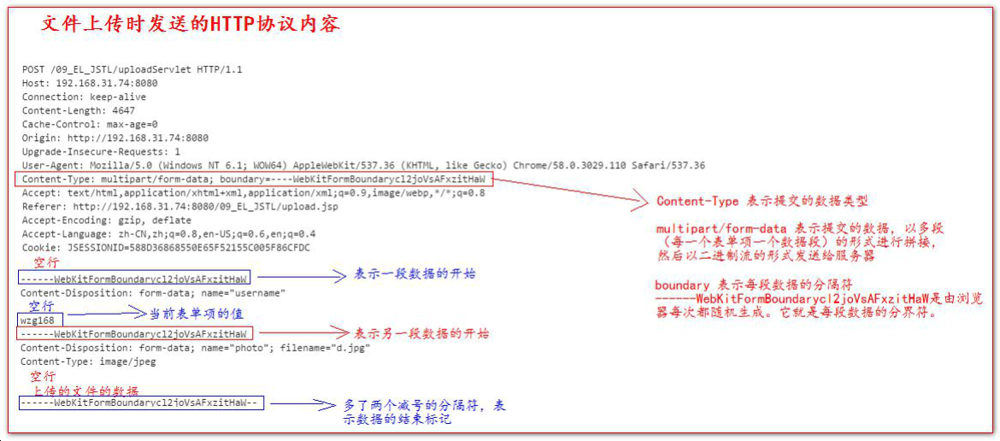
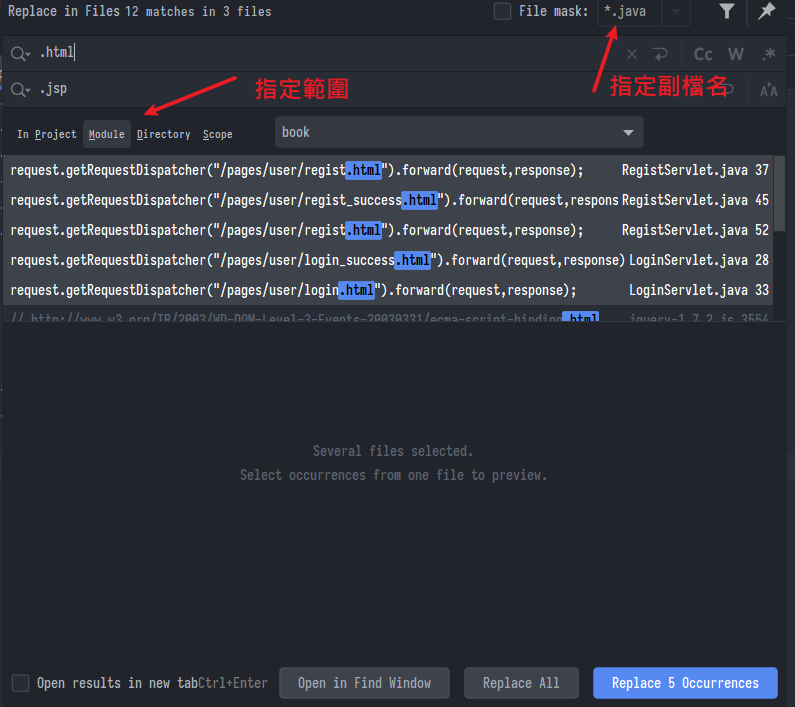

檔案上傳與下載、書城項目優化
尚硅谷JavaWeb筆記-07
檔案上傳
讓用戶從前端上傳一個檔案給伺服器
-
要有一個
form標籤，method=post請求- 因為
get有長度限制
- 因為
-
form標籤的encType屬性值必須為multipart/form-data值 -
在
form標籤中使用input type=file添加上傳的檔 -
編寫伺服器代碼(Servlet 程式)接收，處理上傳的資料
-
encType=multipart/form-data表示提交的資料以多段(每一個表單項一個資料段)的形式進行拼接，然後整個以二進位流的形式發送給伺服器
<!DOCTYPE html>
<html lang="en">
<head>
<meta charset="UTF-8">
<title>Title</title>
</head>
<body>
<form action="http://localhost:8080/book/uploadServlet" method="post"
enctype="multipart/form-data">
用戶名：<input type="text" name="username" /> <br>
頭像：<input type="file" name="photo" > <br>
<input type="submit" value="上傳">
</form>
</body>
</html>

- 創一個
UploadServlet用於接收，並且到web.xml綁定，就能用doPost接收這個二進位流 - 顯然自己解析這個二進位流再拆開費力不討好，這邊用別人造好的輪子
commons-fileupload
- 導入:
commons-fileupload-1.2.1.jar
commons-io-1.4.jar
ServletFileUpload類，用於解析上傳的資料。FileItem類，表示每一個表單項。
方法
boolean ServletFileUpload.isMultipartContent(request)判斷當前上傳的資料格式是否是多段的格式public List<FileItem> parseRequest(request)解析上傳的數據boolean FileItem.isFormField()判斷是否是普通的表單項- true 表示普通類型的表單項
- false 表示上傳的檔案類型
String FileItem.getFieldName()獲取表單項的 name 屬性值String FileItem.getString()獲取當前表單項的值String FileItem.getName()獲取上傳的檔案名void FileItem.write(file)將上傳的檔寫到 參數 file 所指向硬碟位置
範例
- 檢查是否回多段資料
- 使用工具類接收並解析成一個一個
FileItem - 寫到硬碟裡
@Override
protected void doPost(HttpServletRequest request, HttpServletResponse response) throws ServletException,
IOException {
System.out.println("接收到有人來上傳");
// 先判斷使否為多段資料，確認是來上傳檔案的
if (ServletFileUpload.isMultipartContent(request)){
// 創建一個fileItemFactory工廠實現類
FileItemFactory fileItemFactory = new DiskFileItemFactory();
// 創建解析用的工具類
ServletFileUpload up = new ServletFileUpload(fileItemFactory);
try {
// 拆分成一個一個的表單項目FileItem
List<FileItem> list = up.parseRequest(request);
// 判斷是普通表單類還是上傳的檔案
for (FileItem fileItem : list) {
if (fileItem.isFormField()){
// 是普通表單項
System.out.println("表單name="+fileItem.getFieldName());
// 參數UTF-8避免亂碼
System.out.println("值="+fileItem.getString("UTF-8"));
}else {
// 來到這是個檔案
System.out.println("表單name="+fileItem.getFieldName());
System.out.println("檔案名稱="+fileItem.getName());
// 寫到硬碟裡
fileItem.write(new File("D:\\"+fileItem.getName()));
}
}
} catch (Exception e) {
e.printStackTrace();
}
}
}
- 這還是有個問題，就是上傳的檔案名稱可能會有亂碼，因為在http的響應頭中只能是ASCII碼，解決方法後面一起說
下載檔案
讓用戶從伺服器下載一個檔案存到他的電腦
- 核心是以
servletContext作為中轉，流程大致如下:- 伺服器端收到前台請求
- 獲取檔案流(檔案必須包在伺服器中，在web工程目錄之下)
- 接水管，用Context把檔案流輸出到response
- 設定響應的類型與檔頭，包一包回傳給前台
- 範例:
@Override
protected void doGet(HttpServletRequest request, HttpServletResponse response) throws ServletException,
IOException {
// 獲取要下載的檔案內容
ServletContext servletContext = getServletContext();
// ****佔位區域**** 先埋伏筆
// 將伺服器中指定的檔案讀到servletContext中
InputStream is = servletContext.getResourceAsStream("/static/img/1.jpg");
// 造一個準備返回給前端的輸出流
ServletOutputStream os = response.getOutputStream();
// 透過工具類把流接過去
IOUtils.copy(is,os);
/* 到這邊只要url訪問這個Servlet就會直接在瀏覽器頁面顯示圖片了
就像有時候上網一個網址點過去，影片占滿了整個畫面下面有簡單的播放，右鍵能下載那種
現在後臺東西準備好了，接著要包一包送回給前端，說這裡面都是啥
實際上這些語句要放在上面的佔位區
*/
// 指定要下載的檔案名
String downloadFileName="1.jpg";
// 指定要下載的檔案類型
String mimeType = servletContext.getMimeType("/file/" + downloadFileName);
// 告訴前端這個響應的資料類型
response.setContentType(mimeType);
// 告訴前端這裡是要下載
response.setHeader("Content-Disposition","attachment;filename="+downloadFileName);
// Content-Disposition 處置，attachment 附件
}
- 注意，這個範例是按著人想的順序寫的，實際上設定檔頭步驟這些要放在上面先執行，否則流一接通它就把資料一股腦送出去，才不管你是要下載還是要幹嘛
- 反正實際開發這些都是用框架做的，這邊了解就好
亂碼問題
- 因為http的響應頭中只能是ASCII碼，所以必須轉換
- 比如剛剛的下載操作，我想指定別人載回去的檔案名稱有中文，可以這樣:
// 把中文名進行 UTF-8 編碼操作
String str = "attachment; fileName=" + URLEncoder.encode("中文.jpg", "UTF-8");
// 然後把編碼後的字串設置到回應頭中
response.setHeader("Content-Disposition", str);
-
URLEncoder.encode就是編碼成%e8%a4%87%e8%a3%bd%e4%b8%的樣子 -
瀏覽器會自己把他轉回去
-
老舊版本的火狐需要轉成
BASE64編碼，可以這樣 -
String ua = request.getHeader("User-Agent"); // 從響應頭的User-Agent判斷對方是哪種瀏覽器 if (ua.contains("Firefox")) { BASE64Encoder().encode()
-
書城項目
html轉換jsp
- 把靜態的html頁面全部轉為jsp，準備實現動態響應(比如跳出一個註冊成功的提示)
- 點開檔案上面插入
<%@ page contentType="text/html;charset=UTF-8" language="java" %> - 修改檔名
- IDEA用
ctrl + shift + r批量搜尋取代

抽取相同項目
- 找出頁面中復用的地方(例如:歡迎訊息、footer之類)，用之前學的靜態包含取代，實現類似封裝的效果
<%@ include file="/pages/common/head.jsp"%>
<%@include file="/pages/common/footer.jsp"%>
- 多行也可以用
ctrl + shift + r批量搜尋取代 - 範例:
head.jsp
存放head標籤中共用的資訊，比如css、base、JS引用
<%@ page contentType="text/html;charset=UTF-8" language="java" %>
<%
// 用request拼接出工程目錄，移到哪都能動態獲取，從此天下任遨遊
String basePath = request.getScheme()
+ "://"
+ request.getServerName()
+ ":"
+ request.getServerPort()
+ request.getContextPath()
+ "/";
%>
<base href="<%=basePath%>">
<link type="text/css" rel="stylesheet" href="static/css/style.css" >
<script type="text/javascript" src="static/script/jquery-1.7.2.js"></script>
footer.jsp
放一些聯絡資訊啥的，很常見相信都能懂
<%@ page contentType="text/html;charset=UTF-8" language="java" %>
<div id="bottom">
<span>
ABC.Copyright ©2015
</span>
</div>
驗證表單並響應
- 用戶填了帳號密碼然後按登入，需要給他提示或回顯
- 回顯數值，比如常見密碼打錯，這時候剛剛填的帳號還是會存在表單格子裡，用戶只要重新輸入密碼
jsp方面
- 在提示區塊顯示一個提示區塊，這個
errorMsg從servlet獲取- 如果找不到(=null)，就顯示歡迎或指示之類的訊息
- 如果找到了代表這個
request真的有異常，就顯示異常訊息
- 回顯數值，設定表單的預設值
value=要從servlet拿的參數，如果null就沒東西(表示第一次來)，如果輸錯密碼就顯示剛剛的帳號 - 前面學的EL表達式就是用在這邊，否則用
<%還要判端一堆if null
<!--異常提示-->
<span class="errorMsg">
${ empty requestScope.msg ? "請輸入用戶名和密碼":requestScope.msg }
</span>
<!--回顯數值-->
<label>用戶名稱：</label>
<input class="itxt" type="text" placeholder="請輸入用戶名"
autocomplete="off" tabindex="1" name="username"
value="${requestScope.username}" />
servlet方面
- 用
setAttribute()方法保存request的參數值 - 如果需要回顯，就把原來的值再扔回去，注意回顯語句要在跳轉之前
// 接收參數
String username=request.getParameter("username");
String password=request.getParameter("password");
// 跟資料庫驗證
User loginUser = userService.login(new User(username, password, null));
if (loginUser!=null){
// 成功
request.getRequestDispatcher("/pages/user/login_success.jsp").forward(request,response);
}else {
// 登入失敗
request.setAttribute("msg","密碼錯誤!");
request.setAttribute("username",username);
request.getRequestDispatcher("/pages/user/login.jsp").forward(request,response);
}
合併Servlet
- 先前把登入跟註冊拆開了，現在合成一個
- 學習的重要知識點是先前講過html中的隱藏標籤
jsp方面
- 順便改用註解方式綁定Servlet，省得寫web.xml
<form action="UserServlet" method="post">
<input type="hidden" name="action" value="login" />
</form>
<form action="UserServlet" method="post">
<input type="hidden" name="action" value="regist">
</form>
servlet方面
- 判斷隱藏標籤action的值來得知是要幹啥業務
@WebServlet(name = "UserServlet", value = "/UserServlet")
public class UserServlet extends HttpServlet {
private UserService userService = new UserServiceImpl();
@Override
protected void doGet(HttpServletRequest request, HttpServletResponse response) throws ServletException,
IOException {
}
@Override
protected void doPost(HttpServletRequest request, HttpServletResponse response) throws ServletException,
IOException {
// 判斷請求的隱藏標籤
String action=request.getParameter("action");
if ("login".equalsIgnoreCase(action)){
login(request,response);
}else if ("regist".equalsIgnoreCase(action)){
regist(request,response);
}
}
protected void login(HttpServletRequest request, HttpServletResponse response) throws ServletException,
IOException {
// 接收參數
String username = request.getParameter("username");
String password = request.getParameter("password");
// 跟資料庫驗證
User loginUser = userService.login(new User(username, password, null));
if (loginUser != null) {
// 成功
request.getRequestDispatcher("/pages/user/login_success.jsp").forward(request, response);
} else {
// 登入失敗
request.setAttribute("msg", "密碼錯誤!");
request.setAttribute("username", username);
request.getRequestDispatcher("/pages/user/login.jsp").forward(request, response);
}
}
protected void regist(HttpServletRequest request, HttpServletResponse response) throws ServletException,
IOException {
// 接收參數值
String username=request.getParameter("username");
String password=request.getParameter("password");
String email=request.getParameter("email");
String code=request.getParameter("code");
// 檢查驗證碼
if ("abcde".equalsIgnoreCase(code)){
// 檢查名稱是否已存在
if (userService.existsUsername(username)){
// 返回提示並回寫
request.setAttribute("msg", "用戶名已存在！");
request.setAttribute("username", username);
request.setAttribute("email", email);
request.getRequestDispatcher("/pages/user/regist.jsp").forward(request,response);
}else {
// 註冊
User user = new User(username, password, email);
userService.registUser(user);
// 跳轉到註冊成功頁面
request.getRequestDispatcher("/pages/user/regist_success.jsp").forward(request,response);
}
// 檢查驗證碼失敗
}else{
// 註冊失敗，重新註冊
// 把回顯資訊，保存到Request域中
request.setAttribute("msg", "驗證碼錯誤！");
request.setAttribute("username", username);
request.setAttribute("email", email);
request.getRequestDispatcher("/pages/user/regist.jsp").forward(request,response);
}
}
}
改進
-
用反射從action動態調用對應的方法，省去一個一個if
-
因為有各種各樣的Post請求，乾脆抽取出一個抽象的
BaseServlet，其他UserServlet等等繼承這個base
public abstract class BaseServlet extends HttpServlet {
@Override
protected void doGet(HttpServletRequest request, HttpServletResponse response) throws ServletException,
IOException {
}
@Override
protected void doPost(HttpServletRequest request, HttpServletResponse response) throws ServletException,
IOException {
// 判斷請求的隱藏標籤
String action=request.getParameter("action");
try {
// 用反射找到方法
Method declaredMethod = this.getClass().getDeclaredMethod(action, HttpServletRequest.class,
HttpServletResponse.class);
// 調用方法
declaredMethod.invoke(this,request,response);
} catch (Exception e) {
e.printStackTrace();
}
}
}
this.getClass()，當前這個類，誰調用就是哪個ServletgetDeclaredMethod:抓出這個類有的方法，我現在就是要找出自己的某方法- 第一個參數action是方法名稱，比如自己寫的login
- 後面的參數是"該方法參數的類型"，因為可能有很多同名(重載)的方法，但他們參數不一樣，為了確切找到那個要調用的方法，所以這邊明確告知"那個方法的參數是用這些類型的"，故加上.class
- 比喻:我叫老王開車，開車可能有多種意思，所以要確切指出是(開車,方向盤,油門)，喔原來是指"手握方向盤、腳踩油門"的那個開車
- 真正調用invoke方法時才傳入實參
- 第一個參數表示由誰調用這個找到的方法，this就是Servlet自己
UserServlet繼承base之後，就不能再重寫doPost方法，而是只要寫出屬於自己業務的方法(比如login)- 前端的請求一樣是發給
UserServlet，它繼承了base的doPost方法，注意這邊調用的時候this是指向UserServlet，不要搞混了- 兒子繼承父親的方法，調用時的this當然還是兒子的
- 不得不說Java學到這裡才終於搞懂一點反射跟繼承的精隨
小結
- 上傳的前端:
<form action="UploadServlet" method="post" enctype="multipart/form-data">
- 上傳的後端:使用工具類接收並解析成一個一個
FileItem - 下載:用
servletContext做中轉，把流接起來
上次修改於 2022-01-07